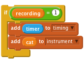
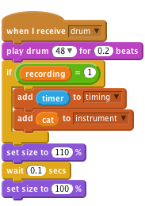

Scratch Card - Recorder
Level 5
Create two new lists (for all sprites). Call one of them instrument and the other timing.
Create a new variable (for all sprites) called recording
For each of your instruments (drum, piano, each sound sample etc.), you will need to add the following items to the when I receive block.

Change the word “cat” in add [cat] to [instrument v] to match the name of the message used to play this sound.

Draw a new sprite and give it a red circle costume. Name this sprite “Record”.

Create a script that sets recording to 1 and deletes all of instrument and timing when clicked.
Try clicking the record button. What happens when you play instruments?
Create another sprite and give it a costume in the shape of a green arrow. Call this “Play”.

Create a new variable called index for Play only.
Now we need to make the playback actually do something. Add this script to "Play"
when Play clicked
set [recording v] to (0)
set [index v] to (1)
reset timer
forever
if <(item (index) of [timing v]) < (timer)>
broadcast (item (index) of [instrument v])
change [index v] by (1)
if <(index) > (length of [timing v])>
stop script
end
end
endPress the green play button. what happens?
Now click the red record button and play some instruments. When you're done,
press the green play button again. What happens?
Play some more instruments without pressing record. Then play the green play
button again. What happens?